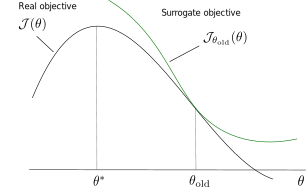
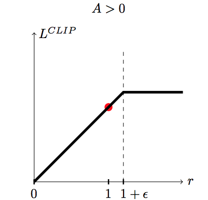
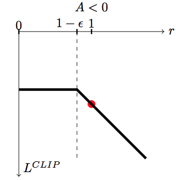

The policy gradient tells you in which direction of the parameter space \theta the return is increasing the most.
If you take too big a step in that direction, the new policy might become completely bad (policy collapse).
Once the policy has collapsed, the new samples will all have a small return: the previous progress is lost.
This is especially true when the parameter space has a high curvature, which is the case with deep NN.
Policy collapse
Policy collapse is a huge problem in deep RL: the network starts learning correctly but suddenly collapses to a random agent.
For on-policy methods, all progress is lost: the network has to relearn from scratch, as the new samples will be generated by a bad policy.
Trust regions and gradients
Trust region optimization searches in the neighborhood of the current parameters \theta which new value would maximize the return the most.
This is a constrained optimization problem: we still want to maximize the return of the policy, but by keeping the policy as close as possible from its previous value.
We want to maximize the expected return of a policy \pi_\theta, which is equivalent to the Q-value of every state-action pair visited by the policy:
\mathcal{J}(\theta) = \mathbb{E}_{s \sim \rho_\theta, a \sim \pi_\theta} [Q^{\pi_\theta}(s, a)]
Let’s note \theta_\text{old} the current value of the parameters of the policy \pi_{\theta_\text{old}}.
Kakade and Langford (2002) have shown that the expected return of a policy \pi_\theta is linked to the expected return of the current policy \pi_{\theta_\text{old}} with:
A^{\pi_{\theta_\text{old}}}(s, a) = Q_\theta(s, a) - Q_{\theta_\text{old}}(s, a)
is the advantage of taking the action (s, a) and thereafter following \pi_\theta, compared to following the current policy \pi_{\theta_\text{old}}.
The return under any policy \theta is equal to the return under \theta_\text{old}, plus how the newly chosen actions in the rest of the trajectory improves (or worsens) the returns.
TRPO: Trust Region Policy Optimization
If we can estimate the advantages and maximize them, we can find a new policy \pi_\theta with a higher return than the current one.
\mathcal{L}(\theta) = \mathbb{E}_{s \sim \rho_\theta, a \sim \pi_\theta} [A^{\pi_{\theta_\text{old}}}(s, a)]
By definition, \mathcal{L}(\theta_\text{old}) = 0, so the policy maximizing \mathcal{L}(\theta) has positive advantages and is better than \pi_{\theta_\text{old}}.
Maximizing the advantages ensures monotonic improvement: the new policy is always better than the previous one. Policy collapse is not possible!
The problem is that we have to take samples (s, a) from \pi_\theta: we do not know it yet, as it is what we search. The only policy at our disposal to estimate the advantages is the current policy \pi_{\theta_\text{old}}.
We could use importance sampling to sample from \pi_{\theta_\text{old}}, but it would introduce a lot of variance:
the new policy \pi_{\theta_\text{new}} should not be (very) different from \pi_{\theta_\text{old}}.
the importance sampling weight \frac{\pi_{\theta_\text{new}}(s, a)}{\pi_{\theta_\text{old}}(s, a)} will not be very different from 1, so we can omit it.
Let’s define a new objective function \mathcal{J}_{\theta_\text{old}}(\theta):
The only difference with \mathcal{J}(\theta) is that the visited states s are now sampled by the current policy \pi_{\theta_\text{old}}.
This makes the expectation tractable: we know how to visit the states, but we compute the advantage of actions taken by the new policy in those states.
At least locally, maximizing \mathcal{J}_{\theta_\text{old}}(\theta) is exactly the same as maximizing \mathcal{J}(\theta).
\mathcal{J}_{\theta_\text{old}}(\theta) is called a surrogate objective function: it is not what we want to maximize, but it leads to the same result locally.
TRPO: Trust Region Policy Optimization

TRPO: Trust Region Policy Optimization
How big a step can we take when maximizing \mathcal{J}_{\theta_\text{old}}(\theta)? \pi_\theta and \pi_{\theta_\text{old}} must be close from each other for the approximation to stand.
The first variant explored in the TRPO paper is a constrained optimization approach (Lagrange optimization):
The surrogate objective is always smaller than the real objective, as the KL divergence is positive:
\mathcal{J}(\theta) \geq \mathcal{J}_{\theta_\text{old}}(\theta) - C \, D_{KL}(\pi_{\theta_\text{old}} || \pi_\theta)
TRPO: Trust Region Policy Optimization
TRPO: Trust Region Policy Optimization
The policy \pi_\theta maximizing the surrogate objective \mathcal{L}(\theta) = \mathcal{J}_{\theta_\text{old}}(\theta) - C \, D_\text{KL} (\pi_{\theta_\text{old}}||\pi_\theta):
has a higher expected return than \pi_{\theta_\text{old}}:
but the parameters \theta are much closer to the optimal parameters \theta^*.
The version with a soft constraint necessitates a prohibitively small learning rate in practice.
The implementation of TRPO uses the hard constraint with Lagrange optimization, what necessitates using conjugate gradients optimization, the Fisher Information matrix and natural gradients: very complex to implement…
However, there is a monotonic improvement guarantee: the successive policies can only get better over time, no policy collapse! This is the major advantage of TRPO compared to the other methods: it always works, although very slowly.
2 - PPO: Proximal Policy Optimization
PPO: Proximal Policy Optimization
Let’s take the unconstrained objective function of TRPO:
\mathcal{J}(\theta_\text{old}) does not depend on \theta, so we only need to maximize the advantages:
\mathcal{L}(\theta) = \mathbb{E}_{s \sim \rho_{\theta_\text{old}}, a \sim \pi_{\theta}} [A^{\pi_{\theta_\text{old}}}(s, a)]
In order to avoid sampling action from the unknown policy \pi_\theta, we can use importance sampling with the current policy:
\mathcal{L}(\theta) = \mathbb{E}_{s \sim \rho_{\theta_\text{old}}, a \sim \pi_{\theta_\text{old}}} [\rho(s, a) \, A^{\pi_{\theta_\text{old}}}(s, a)]
with \rho(s, a) = \frac{\pi_{\theta}(s, a)}{\pi_{\theta_\text{old}}(s, a)} being the importance sampling weight.
But the importance sampling weight \rho(s, a) introduces a lot of variance, worsening the sample complexity.
Is there another way to make sure that \pi_\theta is not very different from \pi_{\theta_\text{old}}, therefore reducing the variance of the importance sampling weight?
PPO: Proximal Policy Optimization
The solution introduced by PPO is simply to clip the importance sampling weight when it is too different from 1:
\mathcal{L}(\theta) = \mathbb{E}_{s \sim \rho_{\theta_\text{old}}, a \sim \pi_{\theta_\text{old}}} [\min(\rho(s, a) \, A^{\pi_{\theta_\text{old}}}(s, a), \text{clip}(\rho(s, a), 1-\epsilon, 1+\epsilon) \, A^{\pi_{\theta_\text{old}}}(s, a))]
For each sampled action (s, a), we use the minimum between:
the TRPO unconstrained objective with IS \rho(s, a) \, A^{\pi_{\theta_\text{old}}}(s, a).
the same, but with the IS weight clipped between 1-\epsilon and 1+\epsilon.
PPO: Proximal Policy Optimization

If the advantage A^{\pi_{\theta_\text{old}}}(s, a) is positive (better action than usual) and:
the IS is higher than 1+\epsilon, we use (1+\epsilon) \, A^{\pi_{\theta_\text{old}}}(s, a).
otherwise, we use \rho(s, a) \, A^{\pi_{\theta_\text{old}}}(s, a).

If the advantage A^{\pi_{\theta_\text{old}}}(s, a) is negative (worse action than usual) and:
the IS is lower than 1-\epsilon, we use (1-\epsilon) \, A^{\pi_{\theta_\text{old}}}(s, a).
otherwise, we use \rho(s, a) \, A^{\pi_{\theta_\text{old}}}(s, a).
PPO: Proximal Policy Optimization
This avoids changing too much the policy between two updates:
Good actions (A^{\pi_{\theta_\text{old}}}(s, a) > 0) do not become much more likely than before.
Bad actions (A^{\pi_{\theta_\text{old}}}(s, a) < 0) do not become much less likely than before.
PPO: Proximal Policy Optimization
The PPO clipped objective ensures than the importance sampling weight stays around one, so the new policy is not very different from the old one. It can learn from single transitions.
\mathcal{L}(\theta) = \mathbb{E}_{s \sim \rho_{\theta_\text{old}}, a \sim \pi_{\theta_\text{old}}} [\min(\rho(s, a) \, A^{\pi_{\theta_\text{old}}}(s, a), \text{clip}(\rho(s, a), 1-\epsilon, 1+\epsilon) \, A^{\pi_{\theta_\text{old}}}(s, a))]
The advantage of an action can be learned using any advantage estimator, for example the n-step advantage:
Most implementations use Generalized Advantage Estimation (GAE, Schulman et al., 2015).
PPO is therefore an actor-critic method (as TRPO).
PPO is on-policy: it collects samples using distributed learning (as A3C) and then applies several updates to the actor and critic.
PPO: Proximal Policy Optimization
Initialize an actor \pi_\theta and a critic V_\varphi with random weights.
while not converged :
for N workers in parallel:
Collect T transitions using \pi_{\theta}.
Compute the advantage A_\varphi(s, a) of each transition using the critic V_\varphi.
for K epochs:
Sample M transitions \mathcal{D} from the ones previously collected.
Train the actor to maximize the clipped surrogate objective.
\mathcal{L}(\theta) = \mathbb{E}_{s, a \sim \mathcal{D}} [\min(\rho(s, a) \, A_\varphi(s, a), \text{clip}(\rho(s, a), 1-\epsilon, 1+\epsilon) \, A_\varphi(s, a))]
Train the critic to minimize the advantage. \mathcal{L}(\varphi) = \mathbb{E}_{s, a \sim \mathcal{D}} [(A_\varphi(s, a))^2]
PPO: Proximal Policy Optimization
PPO is an on-policy actor-critic PG algorithm, using distributed learning.
Clipping the importance sampling weight allows to avoid policy collapse, by staying in the trust region (the policy does not change much between two updates).
The monotonic improvement guarantee is very important: the network will always find a (local) maximum of the returns.
PPO is much less sensible to hyperparameters than DDPG (brittleness): works often out of the box with default settings.
It does not necessitate complex optimization procedures like TRPO: first-order methods such as SGD work (easy to implement).
The actor and the critic can share weights (unlike TRPO), allowing to work with pixel-based inputs, convolutional or recurrent layers.
It can use discrete or continuous action spaces, although it is most efficient in the continuous case. Go-to method for robotics.
The agents are trained by self-play. Each worker plays against:
the current version of the network 80% of the time.
an older version of the network 20% of the time.
Reward is hand-designed using human heuristics:
net worth, kills, deaths, assists, last hits…
The discount factor \gamma is annealed from 0.998 (valuing future rewards with a half-life of 46 seconds) to 0.9997 (valuing future rewards with a half-life of five minutes).
Coordinating all the resources (CPU, GPU) is actually the main difficulty:
Kubernetes, Azure, and GCP backends for Rapid, TensorBoard, Sentry and Grafana for monitoring…
Schulman, J., Levine, S., Abbeel, P., Jordan, M., and Moritz, P. (2015). Trust Region Policy Optimization. in Proceedings of the 31 st International Conference on Machine Learning, 1889–1897. http://proceedings.mlr.press/v37/schulman15.html.
Schulman, J., Wolski, F., Dhariwal, P., Radford, A., and Klimov, O. (2017). Proximal Policy Optimization Algorithms. http://arxiv.org/abs/1707.06347.